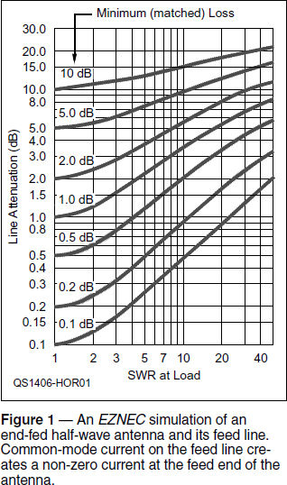
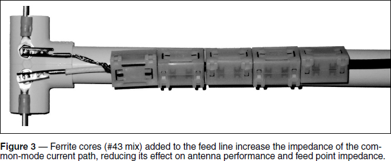

Experiment #136 — End-Fed Antennas
An HF antenna currently enjoying some popularity, especially with backpackers such as those active in the Summits On the Air (www.sota.org.uk) program, is the End-Fed Half-Wave (EFHW). One of the oldest antennas, it was originally known as the “Zepp” and is widely used today in its VHF/UHF disguise as the J-pole (see Experiment #1331). Mechanically, it can be convenient to attach the feed line at one end, which is also a support point. It is also easy to toss one support rope over a high point and let the EFHW slope to a lower point where the feed line connection is made. Electrically, however, there is more to this antenna than meets the eye, and that can lead to some unexpected results.
At the End
The impedance of a half-wavelength piece of wire varies from a minimum of about 73 Ω when the feed point is at the middle to a much higher value at the end. Off-center-fed (OCF) antennas take advantage of this by locating the feed point somewhere at which a medium-sized impedance occurs on several bands. A fixed-ratio impedance transformer then creates a coax-friendly impedance on several bands.
At first glance, the impedance at the end of the wire should be infinite because the current has to be zero. In the real world, however, there is a fair amount of capacitance between the antenna and anything close to it that conducts electricity. This lowers impedance, especially at the end of the antenna. For example, at 14 MHz, 10 pF of capacitance is approximately 1.3 kΩ of reactance. It doesn’t take many pF of capacitance in parallel with the impedance at the end of a wire to lower the resulting impedance dramatically.
Yes, but capacitance to what? Conductive material within a quarter to a half-wavelength of the antenna. That includes capacitance to ground which in a center-fed half-wave is responsible for some current flow at the end of the antenna and partly responsible for making the wire seem longer electrically than it is physically, helping to create the familiar formula for dipole length: l = 468 / f (see Experiment #92).
The Whole Enchilada
What else is nearby that conducts electricity? The feed line, of course! In the absence of stern measures to prevent it, there will be a hefty amount of common-mode current flowing on the feed line, whether coaxial or parallel-conductor. But wait, isn’t parallel-conductor feed line balanced? Yes, but only to the differential-mode currents (see Experiment #91). Along with the equal-and-opposite currents carrying power in the line, each of the conductors can pick up common-mode current just like any other wire and re-radiate signals just like any other antenna. For coax, the center conductor and the inside surface of the shield may be isolated from the antenna’s radiated field but the outer surface is completely exposed and it, too, picks up common-mode current and re-radiates a signal. The combination of the antenna wire and the feed line’s common-mode current path form the entire antenna system.
Based on the end-fed antenna model in W7EL’s EZNEC User Manual, Figure 1 illustrates why considering the entire system is important.2,3 You can see that antenna current varies from zero (this is a simulation) at the un-fed end to a small but non-zero value at the feed point end. The approximately half-wavelength feed line, in this case parallel-conductor, is terminated at the bottom by the power source and has one conductor attached to the antenna at the top. The remaining conductor is left open.

There are two currents in the feed line (phase is not shown in this drawing, only magnitude) that are almost the same magnitude. The currents differ by the amount of common-mode current, ICM, that increases ILine1 and reduces ILine2 so that ICM = ILine1 – ILine2. ICM is also the value of current at the end of the antenna wire. From the standpoint of a radiated signal, the EFHW antenna is not really “end-fed” at all!
Radiating currents in the EFHW antenna system consist of the current on the antenna wire and the common-mode current on the feed line. The EFHW is in reality somewhat off-center-fed. As you might imagine, the resulting radiation pattern is nearly omnidirectional and not very much like a classic dipole. That may be better for a portable station than an antenna with nulls along its axis. Nevertheless, the EFHW user should be aware of where the antenna system current is flowing!
Another thing the EFHW user should be aware of is that when an antenna system is unbalanced, everything that is connected to it and is not isolated by chokes or other methods (such as detuning) should be assumed to be part of the antenna system. A typical EFHW system includes not only the antenna and feed line but the ground connection, all of the radio equipment, and the operator when touching anything.
When running QRP, the resulting common-mode RF current and voltage on the equipment may not be very noticeable. But, at and above 100 W, RF voltages high enough to cause RF burns can be present at different points in the system — such as on the microphone or key! When this happens, you can sometimes “move” the hot spots around in the system by attaching quarter-wavelength wires to the high-voltage point. Because the high-voltage point moves to the open end of the wire, secure it where it won’t be accidentally touched while in use.
Experiencing the System
You can demonstrate these effects with an SWR analyzer covering 2 meters and a simple experimental test antenna. Cut 38 inches of stiff wire or rod into two equal pieces (coat hanger wire will do nicely), creating a dipole antenna for 2 meters. Include about ¾-inch on each wire to form loops or use terminals as in Figure 2. To support the antenna and hold it steady for testing, I used a piece of ½-inch PVC pipe and a T fitting as shown in Figure 2. 8-32 screws through the fitting hold the antenna, as shown in Figure 2.

Next, create an RG-8/X or RG-58 coaxial cable with an RF connector on one end and alligator clips on the other. (This is a handy antenna test accessory.) Any length from 6 to 10 feet is fine. Attach the SWR analyzer to the antenna with the coax and tape the coax along the vertical support for a distance of 4 or 5 feet. This stabilizes the antenna system and keeps it in the same configuration as you experiment — very important for antenna testing.
Locate an open spot where you can secure the antenna support to hold the antenna horizontally a couple of feet over your head. There should be a wavelength or so (6 feet) of clearance between the antenna and any conducting wires or metal surfaces.
Use the SWR analyzer to find the frequency at which the antenna is closest to resonance — mine was about 145.15 MHz. (You may not be able to find the X = 0 resonance due to the setup or analyzer performance.) Record both the resistive (R) and reactive (X) values, whichever are available from the analyzer. In my case, at 145.15 MHz the feed point impedance was measured to be 43 ± j20 Ω through 8 feet of RG-8/X cable. (Most analyzers don’t show the sign of the reactance and that’s not important for this experiment.)
Touch the fingers of one hand to the outside of the feed line and watch the impedance measurement as you move your hand up and down the feed line within a couple of feet of the feed point. You won’t see a lot of variation (a few ohms for R and X) because the low impedance of the antenna feed point masks the effect of the coax shield’s outer surface.
To create a high feed point impedance, tune the analyzer 20 or 30 MHz lower so that the feed point R is 300 to 400 Ω. Perform the same experiment of touching the coax jacket while observing the effect on feed point impedance. At 115 MHz, R varied from 290 – 390 Ω and X from 0 to 115 Ω. This wide variation showed the antenna system included the common-mode current path and any impedance added to it, such as fingers!
If you have some clamp-on ferrite cores, snap them on to the feed line just below the feed point, as shown in Figure 3. The common #43 mix used for suppressing VHF/UHF EMI is just right although other mixes will have some effect, as well. As you add each core, repeat the touch-and-observe experiment. By adding five cores, as shown in the photo, variation in impedance for my antenna was reduced to ±10 Ω of resistance and ±20 Ω of reactance.

The wide variations illustrate the sensitivity of a high impedance feed point to the presence of other conductors connected to and in the near field (within a few wavelengths) of the antenna. You can also see the effect of adding impedance to the feed line’s common-mode current path with ferrite cores. By isolating the shield’s outer surface with ferrite cores, the effect of common-mode current paths on the system can be reduced.
Be careful, however! Your EFHW system may depend on that common-mode current to reduce the feed point impedance of the antenna system. Without it, the EFHW feed point impedance will generally be much higher and difficult to match. It may be better to move any feed line choke closer to the transmitter and let the feed line between the choke and antenna radiate.
For another look at the EFHW through the eyes of an antenna designer, read AE6TY’s QRP Quarterly article, “Refining an End Fed Antenna.”4 By understanding the EFHW as an antenna system, you’ll start to look at your other antennas as systems, too. This will help you plan, install, understand, and use your growing antenna farm more effectively, at home or in the field.
1All previous Hands-On Radio experiments are available to ARRL members at www.arrl.org/hands-on-radio.
2EZNEC User Manual, version 5.0, eznec.com/misc/EZNEC_Printable_Manual/5.0/EZW50_User_Manual.pdf.
3Lewallen, Roy W7EL, “Baluns, What They Do and How They Do It,” www.eznec.com/.Amateur/Articles/Baluns.pdf
4www.ae6ty.com/Papers_files/Refining%20an%20End%20Fed%20Vertical%20Dipole.pdf